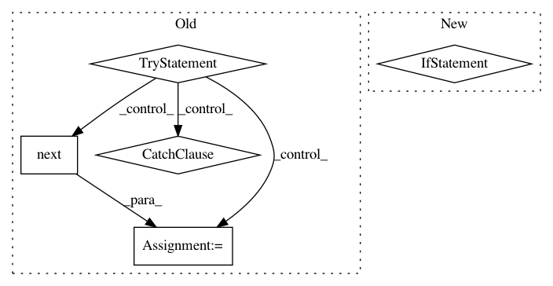

babf7c9f50282143ab8efee96a587bf5cb74123f,chainercv/evaluations/eval_semantic_segmentation_iou.py,,calc_semantic_segmentation_confusion,#Any#Any#Any#,6
Before Change
confusion = np.zeros((n_class, n_class), dtype=np.int64)
while True:
try:
pred_label = next(pred_labels)
gt_label = next(gt_labels)
except StopIteration:
break
if pred_label.ndim != 2 or gt_label.ndim != 2:
raise ValueError("ndim of inputs should be two.")
if pred_label.shape != gt_label.shape:
raise ValueError("Shapes of inputs should be same.")
After Change
for iter_ in (pred_labels, gt_labels):
// This code assumes any iterator does not contain None as its items.
if next(iter_, None) is not None:
raise ValueError("Length of input iterables need to be same")
return confusion
def calc_semantic_segmentation_iou(confusion):
In pattern: SUPERPATTERN
Frequency: 3
Non-data size: 5
Instances
Project Name: chainer/chainercv
Commit Name: babf7c9f50282143ab8efee96a587bf5cb74123f
Time: 2017-06-01
Author: yuyuniitani@gmail.com
File Name: chainercv/evaluations/eval_semantic_segmentation_iou.py
Class Name:
Method Name: calc_semantic_segmentation_confusion
Project Name: chainer/chainercv
Commit Name: 9cc2c91177a6456dea602a93b77864b0a7952333
Time: 2019-02-24
Author: ktns.87@gmail.com
File Name: chainercv/links/model/pickable_sequential_chain.py
Class Name: PickableSequentialChain
Method Name: pick
Project Name: ray-project/ray
Commit Name: d7c95a4a9065cbad73901b4c1de087837e260316
Time: 2020-11-17
Author: simon.mo@hey.com
File Name: python/ray/serve/api.py
Class Name: Client
Method Name: get_handle